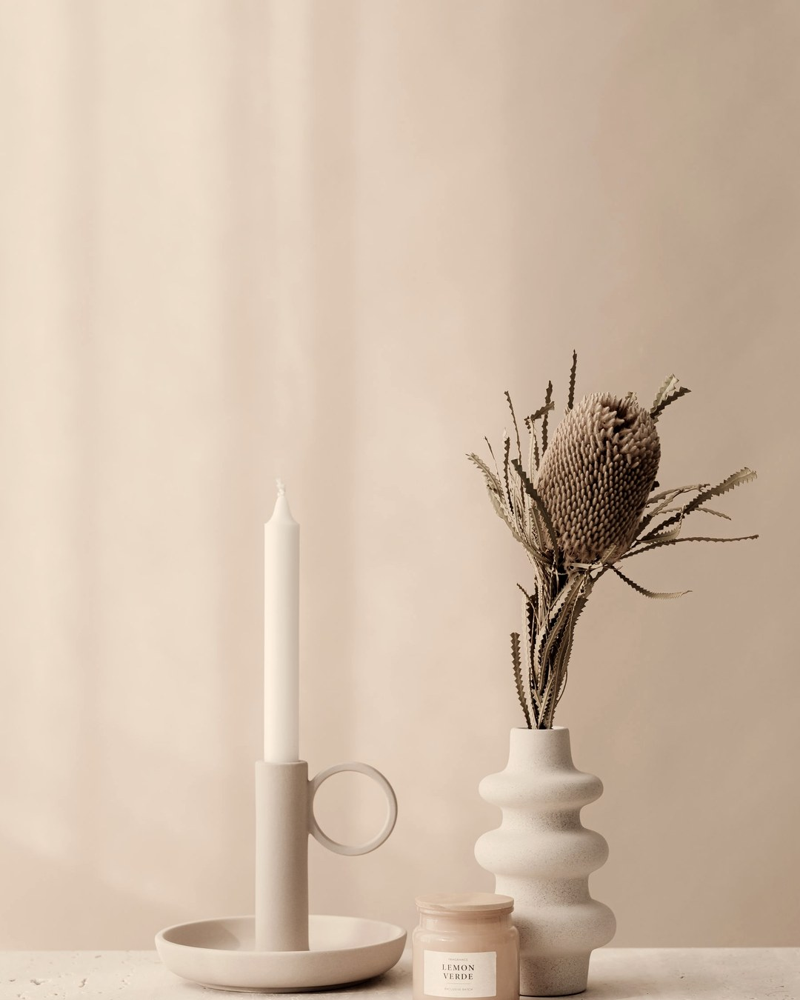
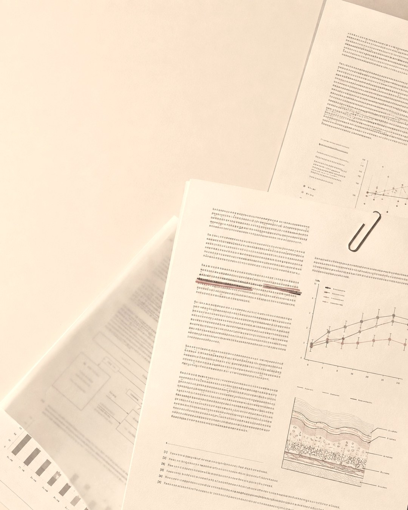
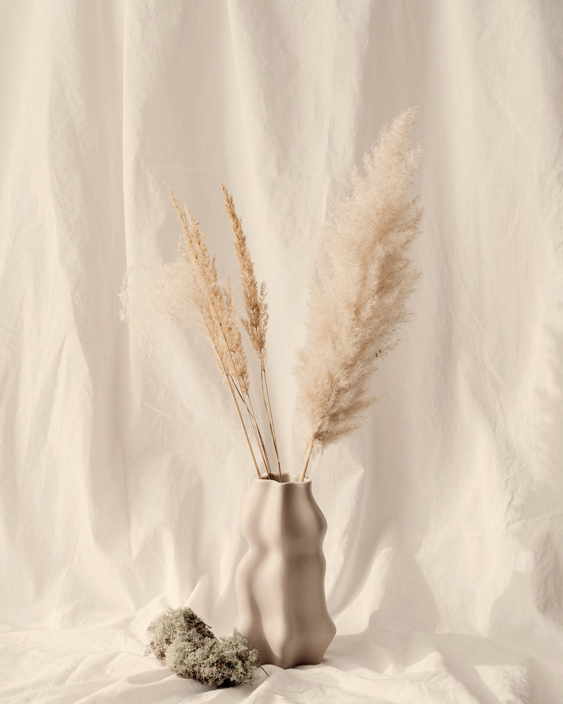
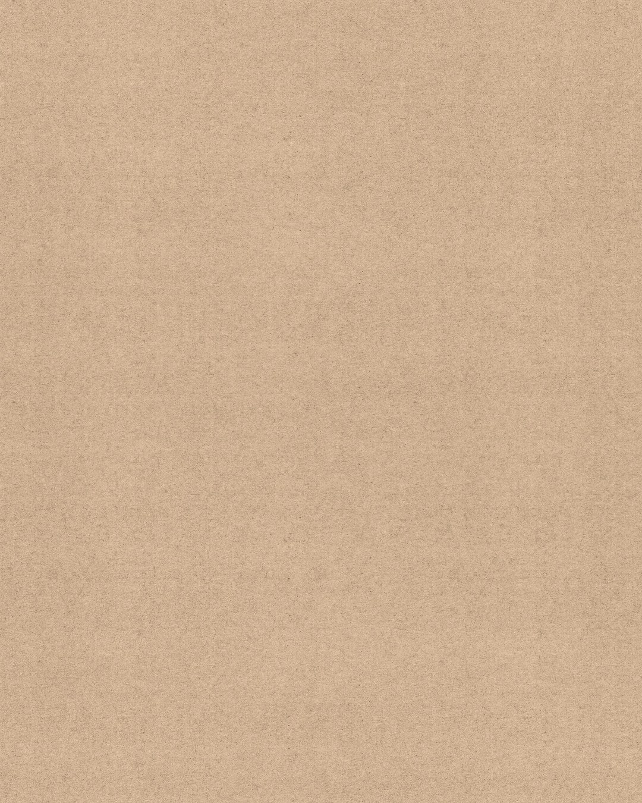
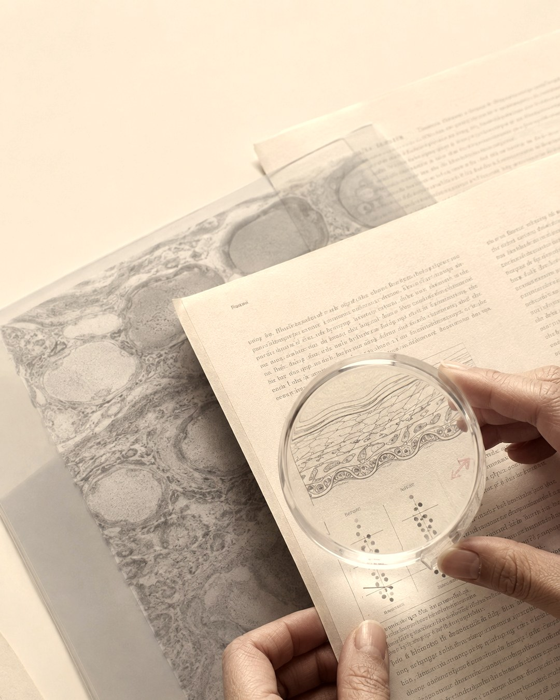

임상시험에선 성분을 뺀 크림을 바른 그룹도 좋아졌습니다.그것도 활성 성분군 효과의 절반 넘게요.그럼 우리가 낸 세럼값은 어디로 간 걸까요.
자체 설문 32명 · 국제 학술지 리뷰 2026

8월에 32명께 여쭤봤어요.「쓰는 중에 불편한 것」 1위가「효과가 있는 건지 없는 건지 모르겠다」였습니다.
안 듣는 걸 계속 쓰면 시간을 잃고,듣는 걸 일찍 버리면 다시 처음부터예요.설문에서도 18명(56%)이 다 못 쓰고 방치했습니다.

성분을 뺀 크림만 바른 그룹에서 나타난염증성 병변 감소폭입니다. 참가자 2,817명 임상시험.
Siripanich C, Chow YC, Ali FR. Skin Health and Disease 2026;6(3):207–213위 리뷰가 정리한 임상시험들의 기제(위약)군 수치입니다

새 제품을 쓰면 같이 바뀝니다. 더 신경 써서 바르고,거르지 않고, 자외선 차단도 챙기게 되죠.2주 뒤의 「좋아졌다」에는 그게 다 섞여 있어요.
기본을 채웠는데도 12주째 그대로일 때.그때가 성분이 할 일이 생기는 시점이에요.그 전에 사면 빈자리 값을 성분값으로 내는 겁니다.

비싼 걸 더하는 게 아니라 빠진 자리를 메우는 일이에요.

사기 전에 한 번, 12주 뒤에 한 번 보시면 됩니다.저장해두고 팔로우해두시면 다음 회차에서 이어집니다.
당신이 푸르렀던 그 시절로
RE:BEAUTY